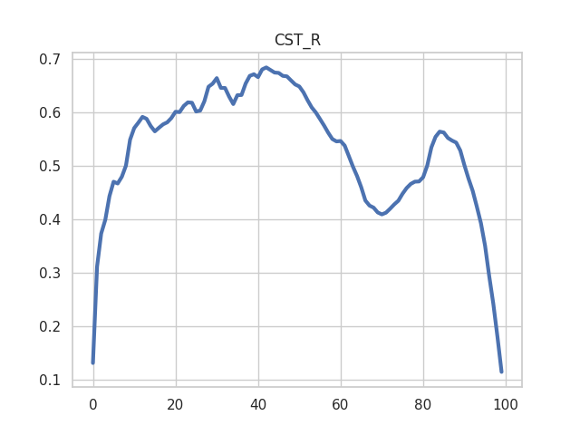
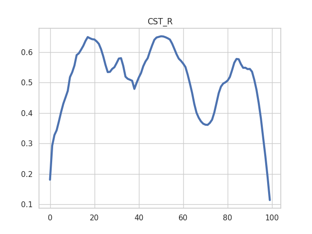
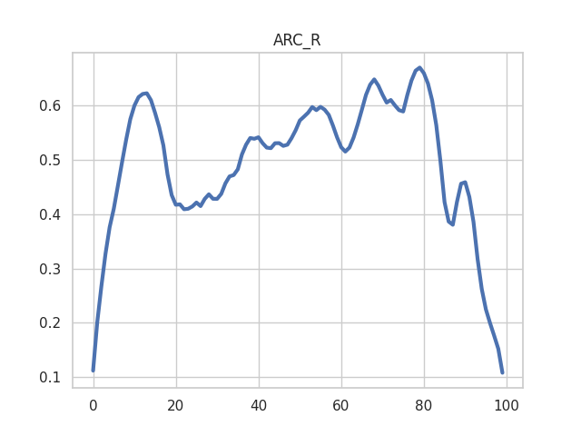
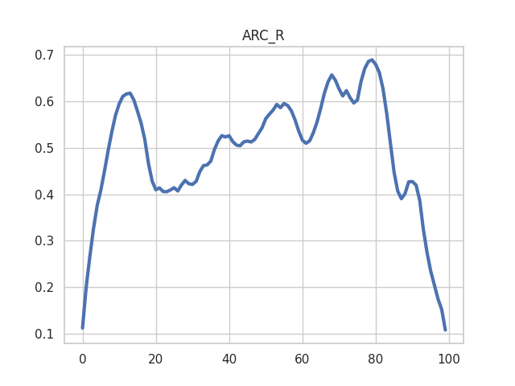

Note
Click here to download the full example code
Plotting tract profiles¶
An example of tracking and segmenting two tracts, and plotting their tract profiles for FA (calculated with DTI). This example uses the Yeatman et al. waypoint ROI approach, first described in [Yeatman2012] and further elaborated in [Yeatman2014].
import os.path as op
import matplotlib.pyplot as plt
import numpy as np
import nibabel as nib
import dipy.data as dpd
from dipy.data import fetcher
from dipy.io.streamline import save_tractogram, load_tractogram
from dipy.stats.analysis import afq_profile, gaussian_weights
from dipy.io.stateful_tractogram import StatefulTractogram
from dipy.io.stateful_tractogram import Space
from dipy.align import affine_registration
from AFQ import api
import AFQ.data as afd
import AFQ.tractography as aft
import AFQ.registration as reg
import AFQ.models.dti as dti
import AFQ.segmentation as seg
from AFQ.utils.volume import transform_inverse_roi
import logging
logging.basicConfig(level=logging.INFO)
# Target directory for this example's output files
working_dir = "./tract_profile"
Get example data:¶
dpd.fetch_stanford_hardi()
hardi_dir = op.join(fetcher.dipy_home, "stanford_hardi")
hardi_fdata = op.join(hardi_dir, "HARDI150.nii.gz")
hardi_fbval = op.join(hardi_dir, "HARDI150.bval")
hardi_fbvec = op.join(hardi_dir, "HARDI150.bvec")
img = nib.load(hardi_fdata)
Calculate DTI:¶
print("Calculating DTI...")
if not op.exists(op.join(working_dir, 'dti_FA.nii.gz')):
dti_params = dti.fit_dti(hardi_fdata, hardi_fbval, hardi_fbvec,
out_dir=working_dir)
else:
dti_params = {'FA': op.join(working_dir, 'dti_FA.nii.gz'),
'params': op.join(working_dir, 'dti_params.nii.gz')}
FA_img = nib.load(dti_params['FA'])
FA_data = FA_img.get_fdata()
Out:
Calculating DTI...
Register the individual data to a template:¶
For the purpose of bundle segmentation, the individual brain is registered to the MNI T2 template. The waypoint ROIs used in segmentation are then each brought into each subject’s native space to test streamlines for whether they fulfill the segmentation criteria.
Note
To find the right place for the waypoint ROIs, we calculate a non-linear transformation between the individual’s brain DWI measurement (the b0 measurements) and the MNI T2 template. Before calculating this non-linear warping, we perform a pre-alignment using an affine transformation.
print("Registering to template...")
MNI_T2_img = afd.read_mni_template()
if not op.exists(op.join(working_dir, 'mapping.nii.gz')):
import dipy.core.gradients as dpg
gtab = dpg.gradient_table(hardi_fbval, hardi_fbvec)
b0 = np.mean(img.get_fdata()[..., gtab.b0s_mask], -1)
# Prealign using affine registration
_, prealign = affine_registration(
b0,
MNI_T2_img.get_fdata(),
img.affine,
MNI_T2_img.affine)
# Then register using a non-linear registration using the affine for
# prealignment
warped_hardi, mapping = reg.syn_register_dwi(hardi_fdata, gtab,
prealign=prealign)
reg.write_mapping(mapping, op.join(working_dir, 'mapping.nii.gz'))
else:
mapping = reg.read_mapping(op.join(working_dir, 'mapping.nii.gz'),
img, MNI_T2_img)
Out:
Registering to template...
Downloading https://templateflow.s3.amazonaws.com/tpl-MNI152NLin2009cAsym/tpl-MNI152NLin2009cAsym_res-01_T2w.nii.gz
0%| | 0.00/13.0k [00:00<?, ?B/s]
0%| | 36.0/13.0k [00:00<00:50, 257B/s]
1%| | 121/13.0k [00:00<00:28, 458B/s]
3%|2 | 376/13.0k [00:00<00:11, 1.07kB/s]
11%|#1 | 1.45k/13.0k [00:00<00:03, 3.62kB/s]
37%|###6 | 4.80k/13.0k [00:00<00:00, 12.1kB/s]
55%|#####4 | 7.09k/13.0k [00:00<00:00, 14.7kB/s]
88%|########8 | 11.4k/13.0k [00:00<00:00, 22.9kB/s]
13.0kB [00:00, 13.7kB/s]
Optimizing level 2 [max iter: 10000]
Optimizing level 1 [max iter: 1000]
Optimizing level 0 [max iter: 100]
Optimizing level 2 [max iter: 10000]
Optimizing level 1 [max iter: 1000]
Optimizing level 0 [max iter: 100]
Optimizing level 2 [max iter: 10000]
Optimizing level 1 [max iter: 1000]
Optimizing level 0 [max iter: 100]
Read in bundle specification¶
The waypoint ROIs, in addition to bundle probability maps are stored in this data structure. The templates are first resampled into the MNI space, before they are brought into the subject’s individual native space. For speed, we only segment two bundles here.
bundles = api.make_bundle_dict(bundle_names=["CST", "ARC"],
resample_to=MNI_T2_img)
Tracking¶
Streamlines are generate using DTI and a deterministic tractography algorithm. For speed, we seed only within the waypoint ROIs for each bundle.
print("Tracking...")
if not op.exists(op.join(working_dir, 'dti_streamlines.trk')):
seed_roi = np.zeros(img.shape[:-1])
for bundle in bundles:
for idx, roi in enumerate(bundles[bundle]['ROIs']):
if bundles[bundle]['rules'][idx]:
warped_roi = transform_inverse_roi(
roi,
mapping,
bundle_name=bundle)
nib.save(nib.Nifti1Image(warped_roi.astype(float), img.affine),
op.join(working_dir, f"{bundle}_{idx+1}.nii.gz"))
# Add voxels that aren't there yet:
seed_roi = np.logical_or(seed_roi, warped_roi)
nib.save(nib.Nifti1Image(seed_roi.astype(float), img.affine),
op.join(working_dir, 'seed_roi.nii.gz'))
sft = aft.track(dti_params['params'], seed_mask=seed_roi,
stop_mask=FA_data, stop_threshold=0.1)
save_tractogram(sft, op.join(working_dir, 'dti_streamlines.trk'),
bbox_valid_check=False)
else:
sft = load_tractogram(op.join(working_dir, 'dti_streamlines.trk'), img)
sft.to_vox()
Out:
Tracking...
Segmentation¶
In this stage, streamlines are tested for several criteria: whether the probability that they belong to a bundle is larger than a threshold (set to 0,per default), whether they pass through inclusion ROIs and whether they do not pass through exclusion ROIs.
print("Segmenting fiber groups...")
segmentation = seg.Segmentation(return_idx=True)
segmentation.segment(bundles,
sft,
fdata=hardi_fdata,
fbval=hardi_fbval,
fbvec=hardi_fbvec,
mapping=mapping,
reg_template=MNI_T2_img)
fiber_groups = segmentation.fiber_groups
Out:
Segmenting fiber groups...
0%| | 0/335 [00:00<?, ?it/s]
1%| | 2/335 [00:00<00:39, 8.44it/s]
1%|1 | 4/335 [00:06<09:40, 1.75s/it]
5%|4 | 16/335 [00:06<01:34, 3.36it/s]
100%|##########| 335/335 [00:06<00:00, 54.01it/s]
0%| | 0/237 [00:00<?, ?it/s]
100%|##########| 237/237 [00:00<00:00, 3763.12it/s]
0%| | 0/431 [00:00<?, ?it/s]
58%|#####8 | 252/431 [00:00<00:00, 2045.17it/s]
100%|##########| 431/431 [00:00<00:00, 3003.54it/s]
0%| | 0/472 [00:00<?, ?it/s]
81%|######## | 380/472 [00:00<00:00, 3547.14it/s]
100%|##########| 472/472 [00:00<00:00, 4392.57it/s]
Cleaning¶
Each fiber group is cleaned to exclude streamlines that are outliers in terms of their trajector and/or length.
print("Cleaning fiber groups...")
for bundle in bundles:
print(f"Cleaning {bundle}")
print(f"Before cleaning: {len(fiber_groups[bundle]['sl'])} streamlines")
new_fibers, idx_in_bundle = seg.clean_bundle(
fiber_groups[bundle]['sl'],
return_idx=True)
print(f"Afer cleaning: {len(new_fibers)} streamlines")
idx_in_global = fiber_groups[bundle]['idx'][idx_in_bundle]
np.save(op.join(working_dir, f'{bundle}_idx.npy'), idx_in_global)
sft = StatefulTractogram(new_fibers.streamlines,
img,
Space.VOX)
sft.to_rasmm()
save_tractogram(sft, op.join(working_dir, f'{bundle}_afq.trk'),
bbox_valid_check=False)
Out:
Cleaning fiber groups...
Cleaning CST_R
Before cleaning: 26 streamlines
Afer cleaning: 26 streamlines
Cleaning CST_L
Before cleaning: 29 streamlines
Afer cleaning: 29 streamlines
Cleaning ARC_R
Before cleaning: 15 streamlines
Afer cleaning: 15 streamlines
Cleaning ARC_L
Before cleaning: 25 streamlines
Afer cleaning: 25 streamlines
Bundle profiles¶
Streamlines are represented in the original diffusion space (Space.VOX) and scalar properties along the length of each bundle are queried from this scalar data. Here, the contribution of each streamline is weighted according to how representative this streamline is of the bundle overall.
print("Extracting tract profiles...")
for bundle in bundles:
sft = load_tractogram(op.join(working_dir, f'{bundle}_afq.trk'),
img, to_space=Space.VOX)
fig, ax = plt.subplots(1)
weights = gaussian_weights(sft.streamlines)
profile = afq_profile(FA_data, sft.streamlines,
np.eye(4), weights=weights)
ax.plot(profile)
ax.set_title(bundle)
plt.show()
- 
- 
- 
- 
Out:
Extracting tract profiles...
References:¶
- Yeatman2012
Jason D Yeatman, Robert F Dougherty, Nathaniel J Myall, Brian A Wandell, Heidi M Feldman, “Tract profiles of white matter properties: automating fiber-tract quantification”, PloS One, 7: e49790
- Yeatman2014
Jason D Yeatman, Brian A Wandell, Aviv Mezer Feldman, “Lifespan maturation and degeneration of human brain white matter”, Nature Communications 5: 4932
Total running time of the script: ( 16 minutes 52.200 seconds)